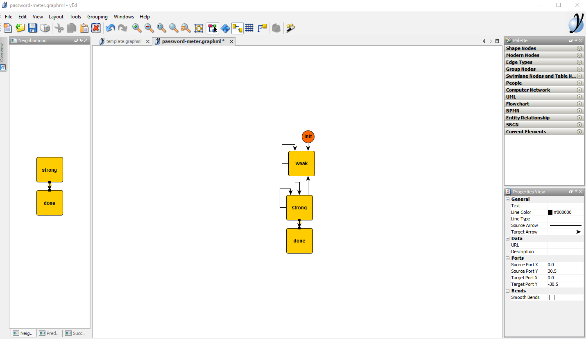

Implementation with the yEd graph editor
In the previous sections, we specified, designed and implemented a password meter. In this section, we are going to reach the same implementation but this time, instead of writing the machine’s transitions manually, we are going to draw them im a graph editor, and convert the drawing to standard JavaScript.
This sections aims at showcasing the yEd graph editor which the preferred tool to create and maintain Kingly state machines. yEd is simple to use, offer a series of automatic layouts, allow to zoom in and out of compound states, and can save the machine graph in a xml textual format which can be versioned on github.
Install yEd
- Go to the yEd website
- Download the desktop graph editor (click on Download now)
- you can alternatively try yEd live in the browser, but we recommend download the desktop version if you are going to draw more than one state machine
- run/install the downloaded executable
Creating a graph
To make it easy to start drawing a graph representing a Kingly machine behavior, we recommend to open a template file that will contain the four elements that you will need in any graph:
The template file can be downloaded from GitHub.
Your editor should then look like this:
yEd has many interesting options that we will explain later. For now, let’s reproduce the graph for our password meter:
- open a new file (File -> New)
- save that file as password-meter (the editor will save the file as
password-meter.graphml)
We are now ready to edit:
- navigate to the previous tab (
template.graphml) — you can use Ctrl-Tab to navigate the tabs in the editor - copy the init node (click on the init node then Ctrl-C)
- navigate to the password meter tab and paste the init node (Ctrl-V)
We have our initial pseudo-state! Let’s draw now the nodes:
- navigate back to the template tab
- copy the yellow node
- navigate to the password meter tab
- paste the yellow node 3 times
- update the labels for each of those three nodes to: weak, strong, done
You should now have:
Let’s now do the edges:
- click on init node and drag to the weak node and let go. This should create an arrow between those two nodes
- do the same between the weak and strong nodes
- do the same between the strong and weak nodes
- do the same between the strong and done nodes
- do the same between the strong and strong nodes (a circle should appear as the origin and target node are the same)
- do the same between the weak and weak nodes (a circle should appear as the origin and target node are the same)
You can move nodes here and there to make space for you to drag the arrow.
Your graph at this moment is probably not well laid out. We are going to ask yEd to lay it out for us:
- Select the hierarchical layout (Layout -> Hierarchical or Alt-Shift-H)
- You will see a rich list of options that allows you to customize the layout, just click ok for now
You should now see this:

Now let’s do the labels. The labels must follow the event [guard] / action format. Here, we are going again to copy from the already-made modelization:
- the label between the init node and the weak node is navigated to url \n / display initial screen. To insert a label, click on an edge, then press F2. A caret will appear, and you will be able to type a text
- the label between the weak node and the weak node is typed [!letter and numbers?] \n / display weak password screen
- the label between the strong node and the weak node is also typed [!letter and numbers?] \n / display weak password screen
- the label between the weak node and the strong node is typed [letter and numbers?] \n / display strong password screen
- the label between the strong node and the strong node is also typed [letter and numbers?] \n / display strong password screen
- the label between the strong node and the done node is clicked submit \n / display password submitted screen
- apply the hierarchic layout again — this time, instead of clicking Ok, click on Dock — this will set a panel on the left side, with a play button. Click that play button to activate the hierarchic layout. Docking a layout is practical if you are going to use it several times.
The result is not very readable:
Let’s adjust the layout by modifying a setting:
- in the docked hierarchical layout panel, select Edge labeling in the Labeling section and set it to
Hierarchic - rerun the layout (play button)
The layout reruns:

The final result is as follows:
Et voila!. With this, we have recreated the modelization for the password meter behaviour that we have shown in previous sections. We let yEd do the layout for us. Drawing a graph is as simple as copy-pasting-dragging nodes.
yEd has far more options that are very useful, and other insightful layouts, but we will not introduce them at this stage of the tutorial.
Converting to JavaScript